2024年北京市中考数学试题 · 选择题 第1、2、3、4、5题 · 对应解析
1. 下列图形中，既是轴对称图形又是中心对称图形的是（ ）
A.
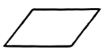
B.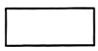
C.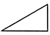
D.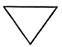
【答案】B
【解析】
【分析】本题考查了中心对称图形与轴对称图形，根据轴对称图形和中心对称图形的定义进行逐一判断即可，如果一个平面图形沿一条直线折叠，直线两旁的部分能够互相重合，这个图形就叫做轴对称图形；把一个图形绕着某一个点旋转
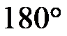
，如果旋转后的图形能够与原来的图形重合，那么这个图形叫做中心对称图形，这个点就是它的对称中心．掌握中心对称图形与轴对称图形的判断是解题的关键．【详解】解：A、是中心对称图形，但不是轴对称图形，故不符合题意；
B、既是轴对称图形，也是中心对称图形，故符合题意；
C、不是轴对称图形，也不是中心对称图形，故不符合题意；
D、是轴对称图形，但不是中心对称图形，故不符合题意；
故选：B．
2. 如图，直线 和相交于点
和相交于点
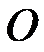
，，若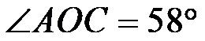
，则的大小为（ ）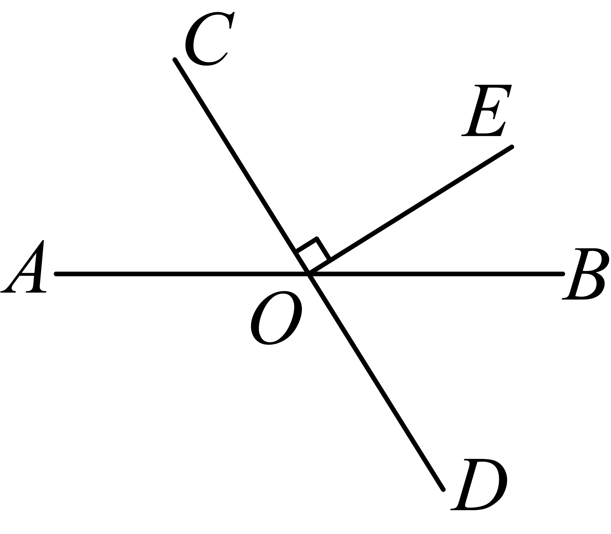
A.
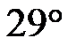
B.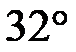
C.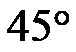
D.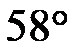
【答案】B
【解析】
【分析】本题考查了垂直的定义，平角的定义，熟练掌握知识点，是解题的关键．
根据得到
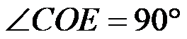
，再由平角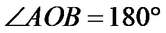
即可求解．【详解】解：∵，
∴，
∵
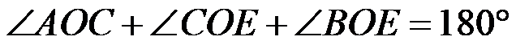
，，∴
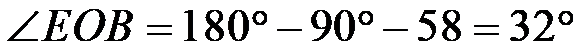
，故选：B．
3. 实数
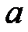
，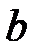
在数轴上的对应点的位置如图所示，下列结论中正确的是（ ）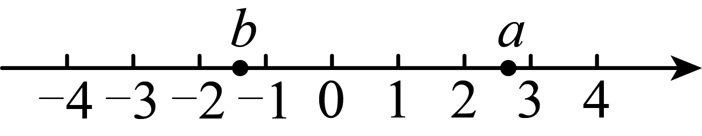
A.
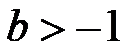
B.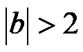
C.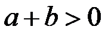
D.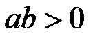
【答案】C
【解析】
【分析】本题考查了是实数与数轴，绝对值的意义，实数的运算，熟练掌握知识点是解题的关键．
由数轴可得
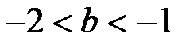
，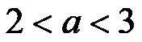
，根据绝对值的意义，实数的加法和乘法法则分别对选项进行即可．【详解】解：A、由数轴可知，故本选项不符合题意；
B、由数轴可知，由绝对值的意义知
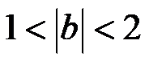
，故本选项不符合题意；C、由数轴可知，而，则
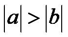
，故，故本选项符合题意；D、由数轴可知，而，因此
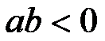
，故本选项不符合题意．故选：C．
4. 若关于
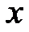
的一元二次方程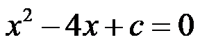
有两个相等的实数根，则实数的值为（ ）A.
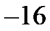
B.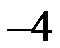
C. 4D. 16【答案】C
【解析】
【分析】根据方程的根的判别式
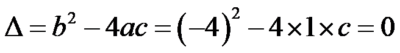
即可．本题考查了根的判别式，熟练掌握根的判别式是解题的关键．
【详解】∵方程，
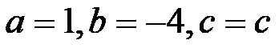
，∴，
∴
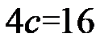
，解得
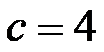
．故选C．
5. 不透明的袋子中装有一个红色小球和一个白色小球，除颜色外两个小球无其他差别．从中随机取出一个小球后，放回并摇匀，再从中随机取出一个小球，则两次都取到白色小球的概率为（ ）
A.
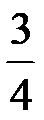
B. C.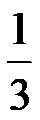
D.【答案】D
【解析】
【分析】本题考查了画树状图或列表法求概率，依据题意先用列表法或画树状图法分析所有等可能的出现结果，然后根据概率公式求出该事件的概率即可．
【详解】解：画树状图如下：
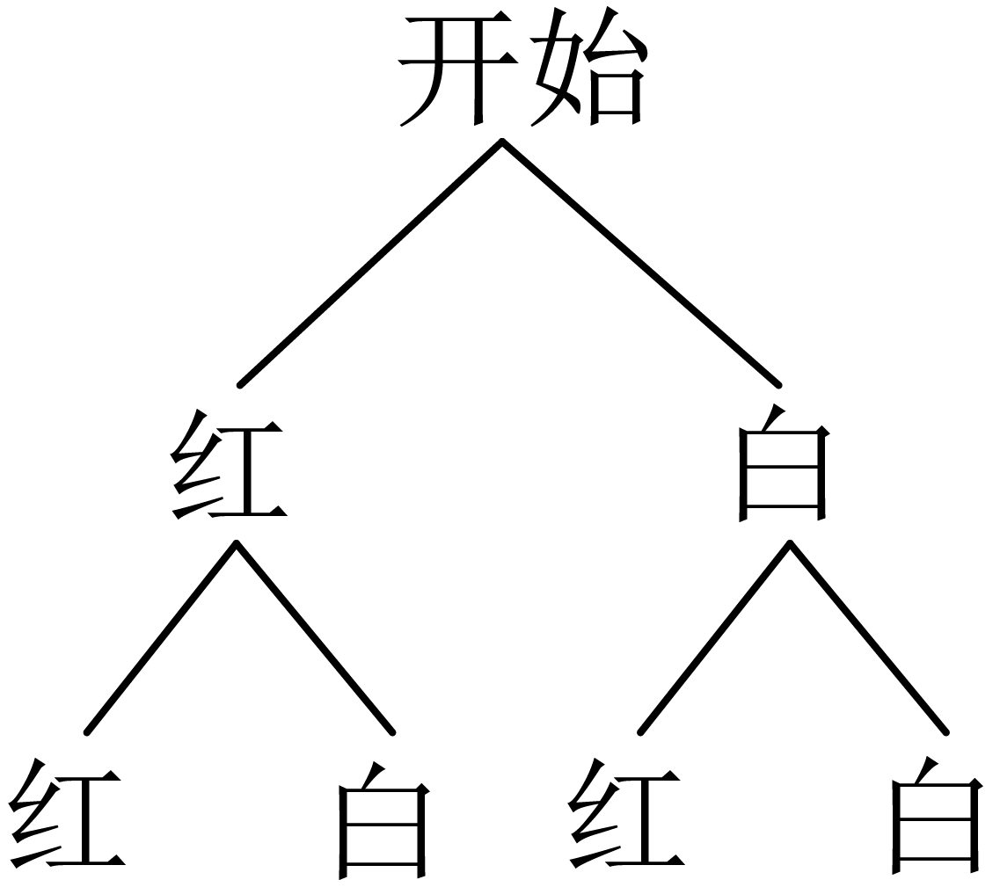
共有4种等可能的结果，其中两次都取到白色小球的结果有1种，
两次都取到白色小球的概率为．
故选：D．